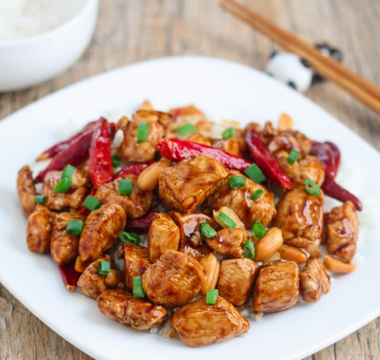

Kung Pao Chicken Recipe

How to make Kung Pao chicken easily
Ingredients
- 1/2 cup Kung Pao sauce
- 1/4 cup soy sauce or tamari
- 2tbsp cornstarch
- 2lbs boneless chicken breasts, sliced in chunks
- 2tbsp sesame oil
- 1 red bell pepper
- 1/2 cup cashews or peanuts
- 2tsp ginger
- 6 garlic cloves, minced
- 1/4tsp chili flakes
Instructions
- Combine soy sauce and cornstarch and mix until smooth. Toss in chicken to coat.
- Heat 1tbsp sesame oil in large skillet. Add chicken in batches and cook until lightly browned on all sides. Transfer chicken to a plate or bowl.
- Heat remaining sesame oil to skillet. Add bell pepper, cashews, garlic, ginger, and chili flakes. Cook until translucent and fragrant. About 2min.
- Return chicken to skillet, add Kung Pao sauce and stir to combine. Bring to a simmer, then reduce heat to low and simmer/stir until thickened. About 2min.